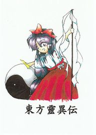

- Welcome to Touhou Wiki!
- Please register to edit. For assistance, check in with our Discord server or IRC channel.
Highly Responsive to Prayers
The Highly Responsive to Prayers | |
|---|---|
|
 | |
| Developer | |
| Publisher | |
| Released |
|
| Genre |
Scrolless Action Shooting Game |
| Gameplay |
Single-Player Story Mode |
| Platforms |
PC-98 (NEC PC-9800 / EPSON PC-486/586) |
| Requirements |
|
Touhou
Contents
Gameplay[edit]
The game introduces the Shrine Maiden Reimu Hakurei, who frantically attempts to persuade a bouncing Yin-Yang Orb to hit various on-screen targets, "cards" and "bosses" alike. Reimu can knock and maneuver the Yin-Yang orb around by whacking it with her gohei, slide-tackling it, and firing shots at it. Enemies will be trying to hinder your progress by firing at you, but you can cancel out their shots with your own, or even deflect them by swinging your gohei. Only the Yin-Yang orb can damage the enemies, however, so simply firing your shots at enemies will have no effect. As a last resort, Reimu can use a "bomb", once per life, to hit all cards on the screen. There is no guarantee that any given card will be hit, and will often fail to damage a boss.
The game consists of several stages of increasing difficulty, with a boss fight occurring every five stages. To complete a stage, the player should clear all cards or defeat the boss. Reimu will lose a life whenever she is hit by an enemy projectile or the yin-yang orb.
There are two selectable paths in the game: the Hell path and the Makai path. Each route features unique stages, bosses, and endings.
Concept[edit]
The gameplay is similar to Arkanoid, which clearly differs from games later in the series. Rather than the classic arcade game's paddle, however, you control Reimu, and the ball is allowed to touch the bottom of the screen.
Gensokyo is not named at all; this term wasn't used until Touhou Gensoukyou itself. ZUN only mentions in the text file included with the game that it takes place in a "strange world".
Name[edit]
The game is the first in the series that bears the kanji Touhou (東方) on it, along with the first to use the naming scheme "東方ＯＯＯ". According to the Music Room Special in Mystic Square, the naming scheme originally came from Touhou Kaikidan (東方怪奇談) that was composed for this game. It's thought by the Toho-Motoneta Wiki that "東方靈異伝" is also from Nihon Ryouiki (日本霊異記, lit. "Ghostly Strange Records from Japan"), an early Heian period collection of setsuwa. Also, Reimu's PC-98 name bears the kanji "靈" that's on the game's title.
Although the English subtitle of the title uses the definite article "the", it was omitted in Akyu's Untouched Score vol.5; the reason for this change is unknown. Although the title uses the word "prayer", it can also refer to "player" if mispronounced.
Story[edit]
Something has wrecked the Hakurei Shrine, and the resident Shrine Maiden isn't going to take it lying down. She charges through the gateway into another worlds, intent on locating and punishing the one responsible for the act. Although she isn't capable of harming her enemies directly, she wields an incredible weapon: the Yin-Yang Orb. With it Reimu will be able to cut a bloody swath through all who stand before her... assuming that she can manage to control it!
The story itself is non-existent throughout the game itself. After Stage 5, the player can choose either to follow the gate into Hell or the gate into Makai, each with their own enemies. It is implied that Reimu defeats whoever originally destroyed her shrine. The endings for the game are equally difficult to understand, as depending on which route the player takes, the Yin-Yang Orb will transform into a tiny wish-granting fairy or a joyful, but strange creature that starts smashing parts of the shrine. The bad ending for the game involves Reimu leaving and then a giant explosion is seen, something also difficult to understand.
Almost all of the characters never appear again except Mima, who appears to reside in the hokora near the Hakurei Shrine. The names and titles of the boss characters in this game appear only in the endings.
Music[edit]
The music in The Highly Responsive to Prayers was listed in-game using abbreviated titles. Additionally, various themes had different titles in their .MDT files (all of which are listed on the main music page linked above).
When Mystic Square was released, ZUN gave proper full names to all the songs, and included retroactive composer comments. Aside from the fourteen tracks in the game, there's an unused fifteenth track called "Shrine of the Wind". It's the only PC-98 track that does not appear on Akyu's Untouched Score.
ZUN's arrangements of "Eastern Strange Discourse" and "Eternal Shrine Maiden", originally posted on his old music page, would later be re-recorded with another synthesizer and included in his first CD, Dolls in Pseudo Paradise.
Press[edit]
The Highly Responsive to Prayers was apparently finished in 1995 (while ZUN was still attending college), which is why he tends to mention that year as the start of the series. However, the first display of the game to "the public" was at the 20th Hatoyama Matsuri, a local festival of Tokyo University, in November of 1996. It was eventually sold at Comiket 52 alongside Story of Eastern Wonderland. In one of the game's included text files, ZUN states that there wasn't intended to be any overarching story between the two games. ZUN has also said that the game was simply a "study project".[1]
In Mystic Square, an arranged version of the game's soundtrack was included, with comments from ZUN. This version of the soundtrack was later released in Akyu's Untouched Score vol.5.
Since September 19, 2002, all the five PC-98 games have officially stopped being sold, shortly after Embodiment of Scarlet Devil was released.
For reference, ZUN was only 19 years old when he sold this game. He's now 42.
External links[edit]
Official[edit]
- Team Shanghai Alice
- Amusement Makers Official Site
- ZUN discusses the creation of The Highly Responsive to Prayers
- Selection of PC-98 game music (PMD)
- PC-98 Touhou music arranged for the SC-88Pro (MIDI)
Unofficial[edit]
- ZUN's MIDI files played on a real SC-88Pro, including his Highly Responsive to Prayers arrangements
- Hoot Multisound Emulator
- Touhou Project PC-98 Complete English Patch Pack by xJeePx
Notes[edit]
| |||||||||||||||||||||||||||||||||||||||||||||||||||||
| ||||||||||||||||||||||||